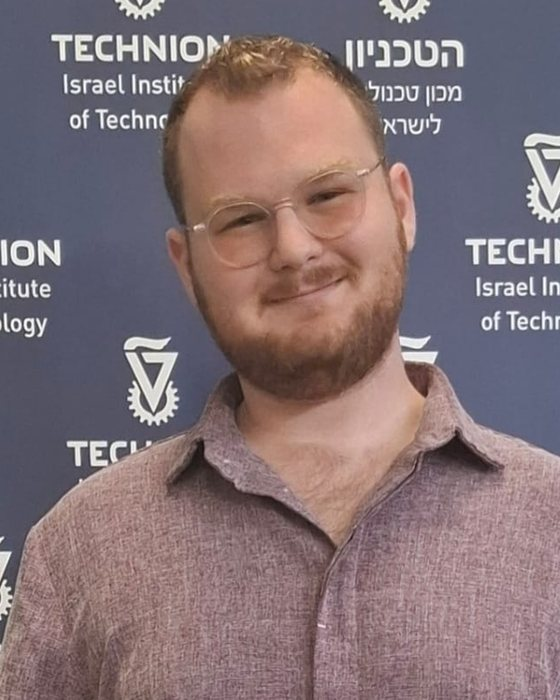

Yotam Ravid
Electrical engineering student at the Technion. I like turning ideas into models, and models into hardware.

Electrical engineering student at the Technion. I like turning ideas into models, and models into hardware.
Built on my own to put what I'd learnt at the Technion to use. I modelled the motors, designed a PI controller with feedforward that holds velocity from wheel-encoder feedback, and wrote the firmware in C.
The Pico runs its own Wi-Fi access point and takes commands over UDP. A 10 kHz control loop reads encoder periods timed by the PIO at 2 µs resolution. The chassis has no steering rack, so it turns tank-style.
A second Pico 2 W reads an analog joystick, calibrates its center at boot, and streams velocity references to the car over UDP every 50 ms. Pressing the stick sends an emergency stop.
A retro Snake game built in hardware for EE Lab 1 with Orr. I designed the movement logic, graphics, sound and the game's state machine.
A foil-lined reflector box that bends a router's signal around metal doors and the reinforced concrete of a safe room. Throughput in the dead zone went from 5 to 200 Mbps at almost no cost, where commercial repeaters had failed.
Political borders across 5,400 years, from 3400 BCE to today, on an interactive map. In game mode you see a random year's borders and guess the year. Older years allow bigger misses. Built on the Seshat Cliopatria dataset.
Photonics and Lasers, Waves and Distributed Systems, Physical Electronics, Electronic Circuits, Modular Robotics, EE Lab 1B
Signals and Systems, Electromagnetic Fields, Semiconductor Devices, Probability, EE Lab 1A
Quantum Physics for Engineers, Partial Differential Equations, Complex Functions, Fourier Series and Integral Transforms, Electric Circuit Theory, Data Structures and Algorithms
Digital Systems and Computer Structure, Physics 2, Calculus 2, Algebra 2, Ordinary Differential Equations
Physics 1, Physics Lab 1, Calculus 1, Algebra 1, Intro to Computer Science
Loader in the experimental crew for the Merkava Barak prototype. I field-tested its new systems alongside engineers from Elbit, El-Op and the Tank Development Authority, then trained crews across the Armored Corps on the new tank.
Certificate of Excellence, 2022. Reserve duty as Sergeant Major since 2023.